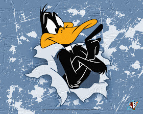

Patolino
 Conhecido por seu temperamento difícil, egocêntrico e cômico, Patolino é um personagem por muitas vezes descrito como dramático, idiota e mentiroso.
Introduzido no show dos Looney Tunes junto com os seus outros amigos. Ele é deuteragonista de uma grande parte das animações.
Suas mentiras são compulsivas e por vezes fora do comum, são modeladas conforme ele deseja naquele momento fazendo até ele mesmo se confundir no meio delas. Ele vai se aproveitar das coisas e situações de acordo com a sua necessidade.
Mas independente da forma que se comporta no meio das situações ele ama os seus amigos e se importa com eles, embora nunca demonstre. Sua personalidade chega a ser engraçada em alguns momentos, mas nada com que faça concordar 100% com suas atitudes.